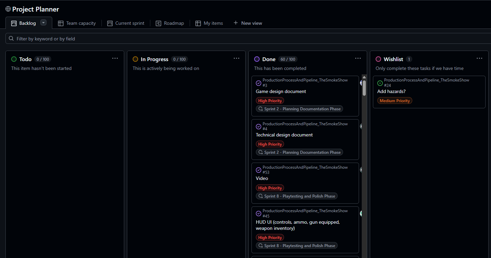

Unreal Engine 5 | Blueprints | Group of Three | Gameplay Programming | UI Programming
This project was made for during the Production Process and Pipeline module for University at the end of my first year, where we had to work in a group to produce a fully functioning game. My team was a group of three and were given 9 weeks to produce a game given the conditions of a real team environment. This module ran alongside a solo project where we had to make the mechanics of a game, shown in "Turn-based RPG". We used Blueprint to construct this project, utilising Github as our version control.
We began by learning what everyone's strengths and weaknesses were, and how best we can channel people's abilities into the areas they work best in. We then went on to create a general concept for the game, where we landed on making a game where the player is a chef who has to shoot ingredients a burger to complete the order. We used GitHub's built-in Kanban Board to make and assign tasks to keep organised. We would hold scrum meetings to consolidate the state of the project, and figure out the next step.

As the team was small, everyone in the team would have to cross different specialisms. However, we took on a main role each, to minimise the amount of confusion on who was working on what. I mainly took on implementing Gameplay as I programmed: the player, the weapons, the system tracking the order on the burger, the system getting and completing the order and the upgrade system. Due to time constrants and the deadline getting closer, I also had to implement the HUD UI and added the "How to Play" section into the main menu.
The player required basic movement blueprinting, utilising the "Enhanced Input" system built into Unreal Engine.